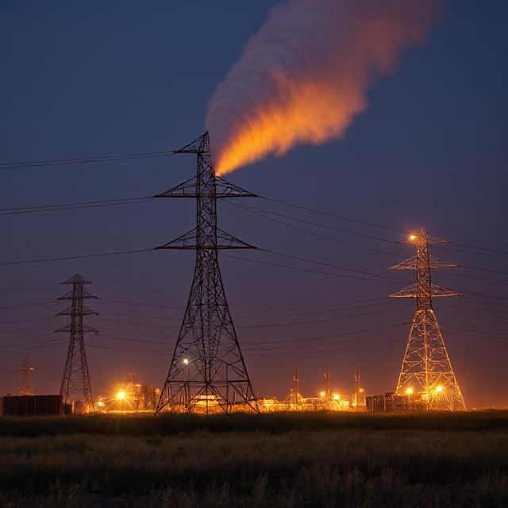
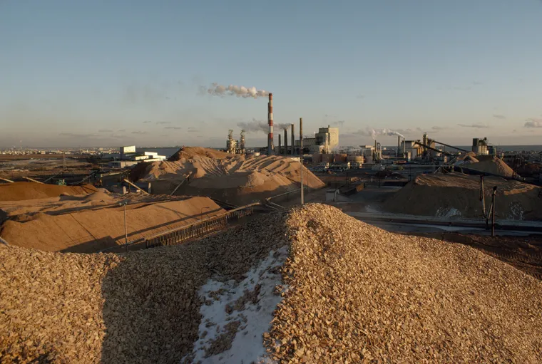

Causas del Calentamiento Global
El calentamiento global ha hecho que los últimos seis años sean los más cálidos
registrados desde 1880, según un comunicado de prensa de la Organización Metereológica Mundial (OMM).
Causa principal: acciones humanas
Según el PNUMA, las actividades humanas son responsables de la mayor parte del calentamiento global.Esto se debe a que las prácticas utilizadas para mantener la sociedad moderna emiten gases de efecto invernadero (GEI).
Entre las principales causas generadoras de GEI, se encuentra la generación de energía y calor mediante la quema de combustibles fósiles como carbón, petróleo y gas natural y deforestación.
La generación de energía
La generación de electricidad y calor a través de los combustibles fósiles provoca una gran cantidad de emisiones globales. La mayoría de la electricidad se genera todavía con la combustión de carbón o gas, lo que produce dióxido de carbono y óxido nitroso, que son potentes gases de efecto invernadero que cubren el planeta y atrapan el calor proveniente del sol. A nivel global, algo más de un cuarto de la electricidad proviene de fuentes de energía renovables eólicas y solares que, al contrario que los combustibles fósiles, emiten poca o ninguna cantidad de gases o contaminantes en el aire.

Las fábricas y las industrias
La industria y las fábricas producen emisiones, en su mayoría provenientes de la quema de combustibles fósiles destinada a generar energía para la fabricación de cemento, hierro, acero, componentes electrónicos, ropa y otros bienes. La minería y otros procesos industriales también generan gases, de la misma forma que lo hace el sector de la construcción. La maquinaria utilizada en los procesos de fabricación a menudo realizados mediante carbón, petróleo o gas, y con algunos materiales, como los plásticos, están compuestos de sustancias químicas derivadas de los combustibles fósiles. La industria manufacturera es una de las que más contribuyen a las emisiones de gases de efecto invernadero a nivel mundial.
